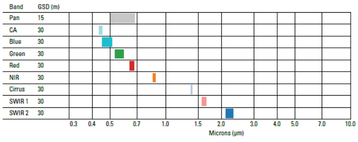
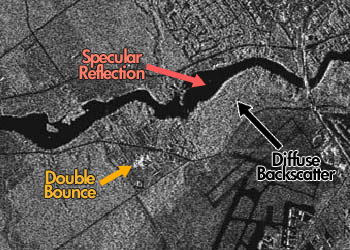
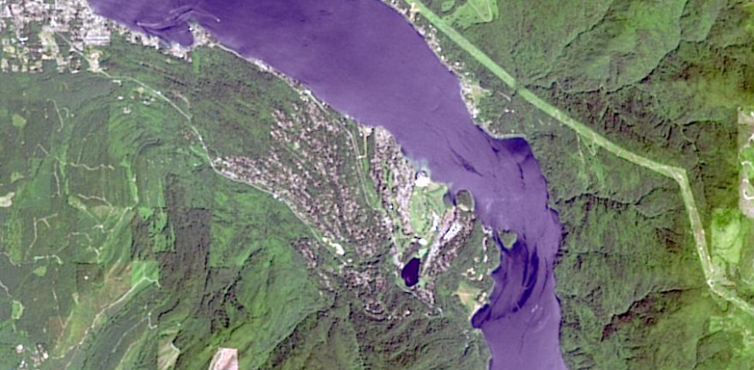
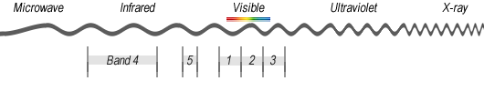
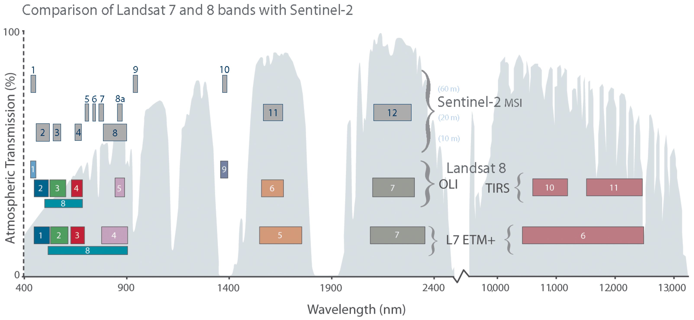
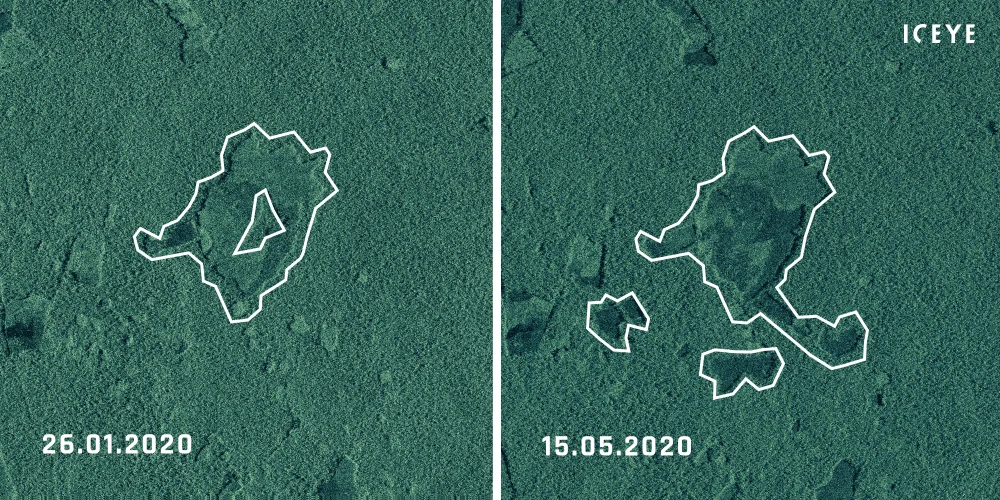

1 Week1 - Introduction of RS
1.1 Summary
Before starting this course, I need to first understand the purpose of this course, which is to introduce the basic concepts and applications of remote sensing, and through this course of RS, the content we will learn includes:
Tele-sensing Cities and Environments: This is a course that introduces the basic principles and applications of tele-sensing, with a focus on urban and environmental issues.
Types and principles of remote sensing: Remote sensing is divided into active and passive, depending on whether it has its own energy transmitter. Remote sensing data is affected by the interaction of electromagnetic waves with the atmosphere and the surface, and needs to be corrected and processed.
Format and resolution of remote sensing data: Remote sensing data is usually raster data and has different storage formats and ways of organizing. The quality and application of remote sensing data are constrained by spatial, spectral, temporal and radiative resolution.
It easily reminds me of the basic concepts of RS that I learned by myself during my undergraduate study. I believe that this course can not only help me review the past knowledge, but also fully supplement other knowledge.
1.2 Basic concepts and principles of remote sensing
1.2.1 The difference between passive and active sensors
The difference between the two is that passive sensors are affected by atmospheric scattering and need to work when light conditions are good, while active sensors can penetrate clouds, volcanic ash and atmospheric conditions and can work at night.
| Active remote sensing example | Passive remote sensing example |
|---|---|
| For the untrained eye, it’s just a bunch of black and white pixels. But the reality is that there’s more than meets the eye. For example, the 3 main types of backscatter are: Specular reflection Double-bounce Diffuse scattering | Passive remote sensing can be very similar to how our eyes interpret the world. But the power of passive remote sensing is to see light in the whole electromagnetic spectrum. For example, this multispectral image can have different band combinations like color infrared. |
| An example of an active sensor is synthetic Aperture radar (SAR), which can “see through the clouds” and has polarization characteristics that can reflect different electromagnetic waves based on surface roughness, shape, orientation, humidity, salinity, density, etc. | In terms of passive remote sensing, the Landsat mission is the longest-running earth observation program. On board Landsat-8, OLI generates 9 spectral bands (Band 1 to 9).  |
 a SAR image |
 Rocky Mountains in true color |
1.2.2 The relation between electromagnetic wave and multispectrum
According to the frequency of electromagnetic wave vibration, the electromagnetic spectrum can be divided into visible spectrum and invisible electromagnetic spectrum two parts.
Multispectral remote sensing refers to the remote sensing observation and research of ground targets in multiple spectral bands. These bands can include infrared, visible, near-infrared, etc. By analyzing the information of these different bands, more information about the ground target can be obtained.


In general, the relationship between electromagnetic wave and multi-spectrum is that multi-spectral remote sensing uses different bands of electromagnetic wave, and more information of ground targets can be obtained by analyzing the information of these bands.
1.3 Application
1.3.1 Remote Sensing Bands and Environmental Applications
This section explores how different spectral bands used in remote sensing contribute to monitoring and managing environmental phenomena such as forest vegetation, water bodies, and soil classification. Each application highlights specific bands that enhance detection accuracy and provide critical insights for environmental studies and management.
| Environmental Application | Example |
|---|---|
| Forest Vegetation Sensitive Bands: Red, Near-Infrared (NIR) |
Deforestation Monitoring  |
| Water Bodies Sensitive Bands: Blue, Green |
Devendra Singh et al. (2023)2 have leveraged geospatial modeling systems and advanced spatial and spectral resolution sensors to monitor various factors related to water quality at an affordable cost and with higher accuracy, including turbidity, chlorophyll-a, suspended residues, and algal blooms in different water bodies. This chapter provides a detailed review of the role of Geographic Information Systems (GIS) and remote sensing in the monitoring, management, and remediation of water quality. |
| Soil Classification Sensitive Bands: Red, Shortwave Infrared (SWIR) |
Hyperspectral remote sensing (HRS) (Huan Yu et al, 2020)3 is used for a detailed analysis of soil spectral properties, with extensive research over the past 40 years. HRS helps identify various soil properties such as minerals, nutrients, organic carbon, moisture, salinity, and texture. |
1.4 Reflection
Through the basic knowledge of this class, I inadvertently deepened my understanding of Landsat series satellites from the concepts of electromagnetic wave, multispectral image and hyperspectral image. Landsat provides the longest continuous space record of Earth’s land mass. Its data is essential for us to make informed decisions about the Earth’s resources and environment. It Landsat is more than just a camera circling the globe with an excellent zoom lens. It measures how much light the Earth reflects from the sun. With Landsat, we have access to a variety of useful images that reveal more about the Earth and help us better understand and manage our planet. For example, these images can be used to monitor the effects of natural and human factors such as land cover, climate change, urbanization, drought, fires, changes in biomass, etc. Therefore, the public use of Landsat data makes a lot of sense, and experts, scholars, and enterprise engineers can implement projects according to their needs.
López-Puigdollers D, Mateo-García G, Gómez-Chova L. Benchmarking Deep Learning Models for Cloud Detection in Landsat-8 and Sentinel-2 Images. Remote Sensing. 2021; 13(5):992. https://doi.org/10.3390/rs13050992↩︎
Singh, D., Dohal, S., Yadav, G., Pandey, H., & Singh, V. (2023). Utilizing GIS and remote sensing methods for polluted water body remediation: A deeper understanding. Sustainable Systems Science: Geospatial Methods and Modeling (Vol. 1, pp. 155-169). https://doi.org/10.1016/B978-0-323-91880-0.00021-0↩︎
Yu, H., Kong, B., Wang, Q., Liu, X. & Liu, X. (2020). Hyperspectral remote sensing applications in soil: a review1. In Earth Observation, (pp. 269-291). DOI: <10.1016/B978-0-08-102894-0.00011-5>↩︎